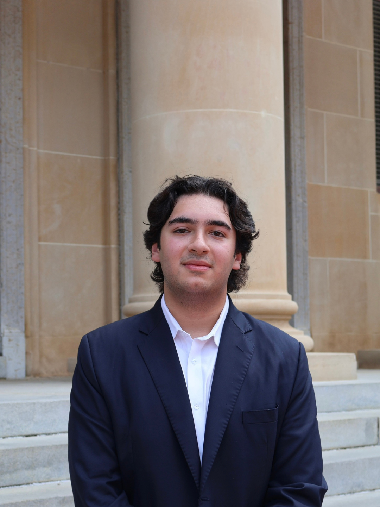
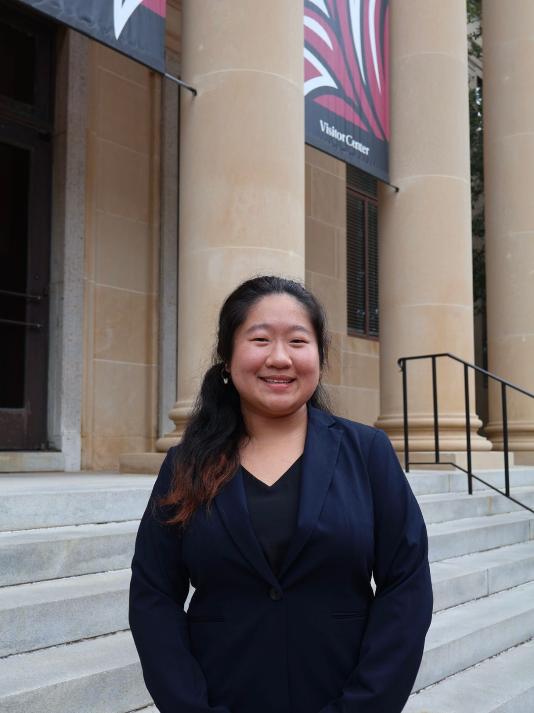
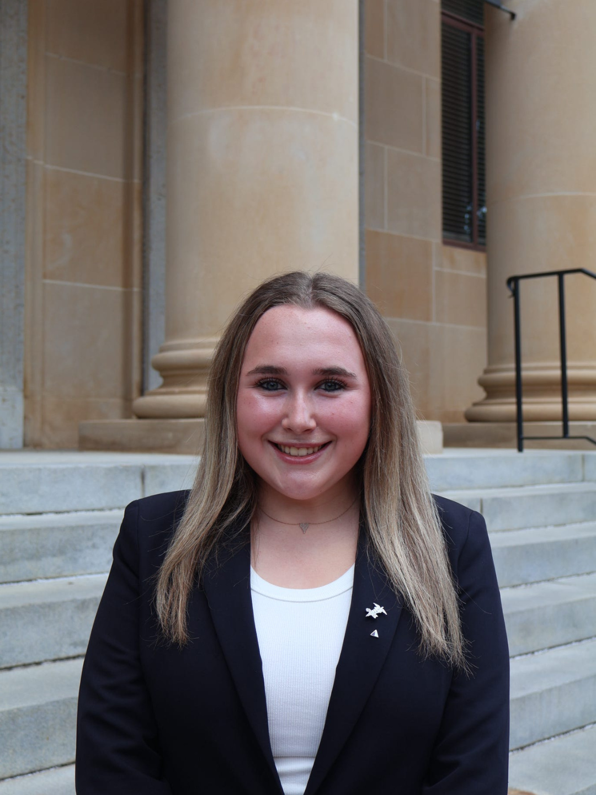
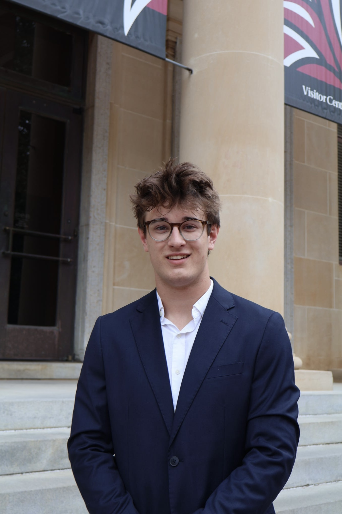
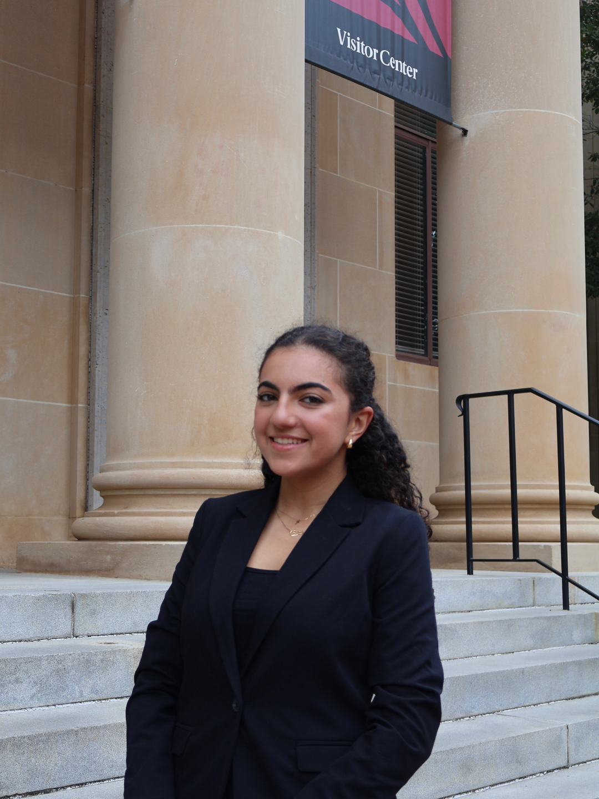
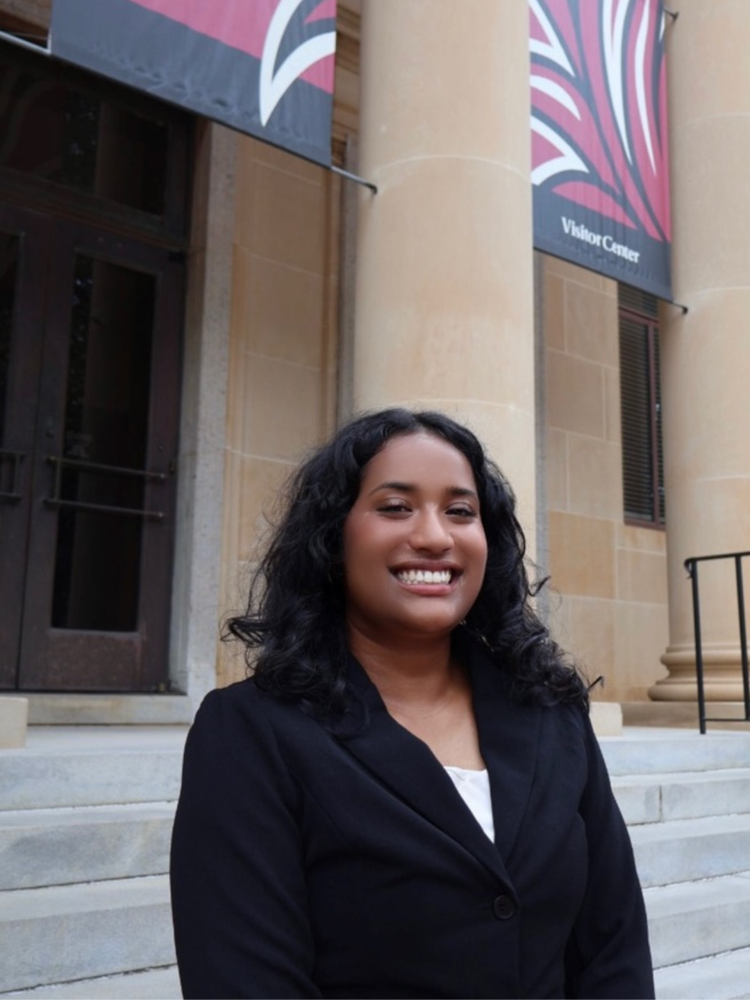

Zayd Kidwai
Board President
Meet the team
Our Executive Board sets chapter direction. Cabinet members lead the research, advocacy, and access work that brings each initiative to life.

Board President

Committee President

VP of Int. Relations

VP of Ext. Relations
Executive Board

VP of Programming

VP of Initiatives
Eliana Gracias
Shriti Pareek
Marlie Punch
Shivangi Nayak
Eleanor Cantrell
Saanvi Sooda
Omar Shahed
Harini Srinivasan